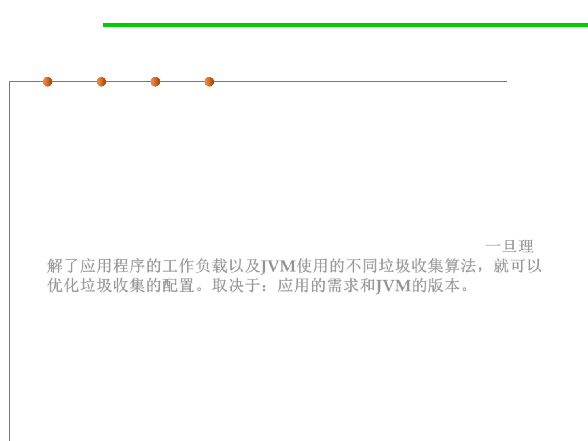

8.1 Metrics, Principles, and Methods of Construction for Performance
(2) Choosing a Garbage Collection Scheme
▪ Depending on which JVM you are using, you can choose from
several garbage collection schemes to manage your system memory.
▪ Some garbage collection schemes are more appropriate for a given
type of application.
▪ Once you have an understanding of the workload of the application
and the different garbage collection algorithms utilized by the JVM,
you can optimize the configuration of the garbage collection.一旦理
解了应用程序的工作负载以及JVM使用的不同垃圾收集算法，就可以
优化垃圾收集的配置。取决于：应用的需求和JVM的版本。